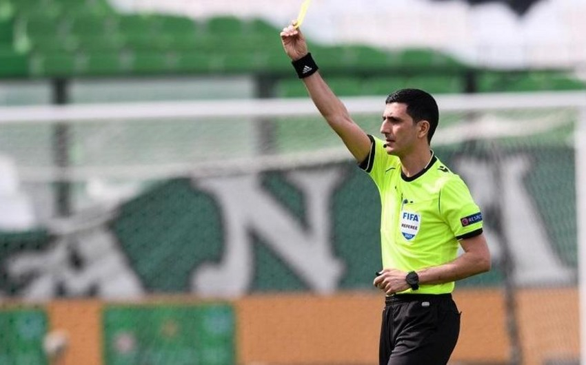
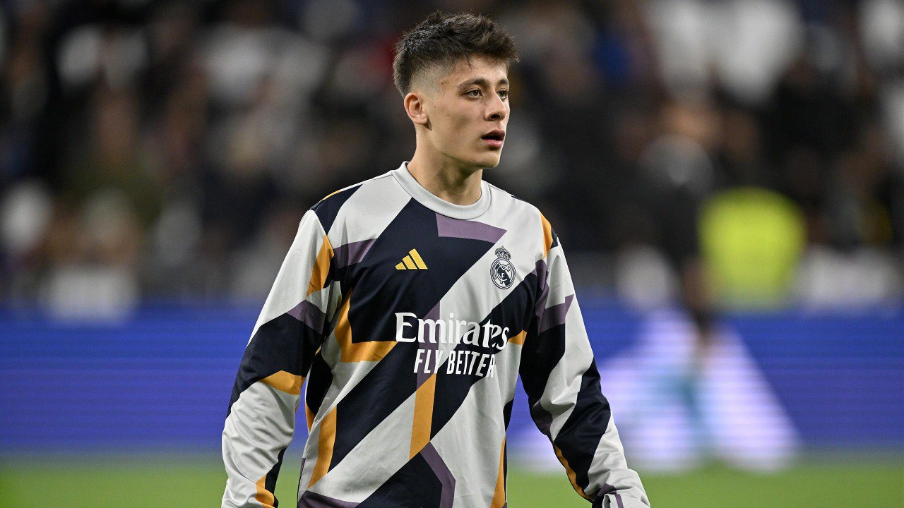
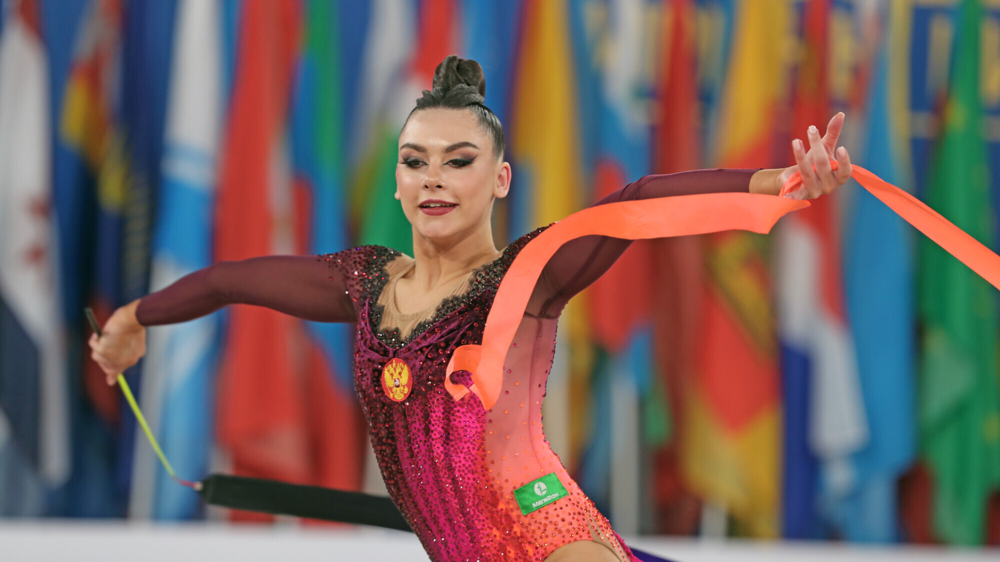

Azərbaycanlı FIFA referisi Mahir Emrelinin komandasının oyununa təyinat alıb
Azərbaycanın FIFA referisi Əliyar Ağayev növbəti dəfə beynəlxalq təyinat alıb.
BAKU.WS report-a istinadən xəbər verir ki, 36 yaşlı hakim Xorvatiyada yerli "Dinamo" və Yunanıstanın PAOK komandaları arasında keçiriləcək UEFA Konfrans Liqasının 1/8 final mərhələsinin ilk oyununu idarə edəcək.
Ona Zeynal Zeynalov və Akif Əmirəli yardımçı olacaqlar.
Qeyd edək ki, martın 7-də reallaşacaq "Dinamo" - PAOK qarşılaşması Bakı vaxtı ilə saat 00:00-da start götürəcək. Zaqreb təmsilçisində Azərbaycan millisinin futbolçusu Mahir Emreli də çıxış edir.
Tez sildi! - Arda Gülərin derbidən sonrakı hərəkəti "Fənərli" və "Beşiktaşlı"ları dəli etdi - FOTO
"Fənərbağça"dan "Real"a transfer olunan Arda Gülər "Beşiktaş" - "Qalatasaray" derbisindən sonra "Qalatasaray" futbolçularının sosial şəbəkədəki paylaşımlarını bəyənib.
BAKU.WS xəbər verir ki, Gülərin Kerem Aktürkoğlu və Barış Alper Yılmazın derbi qələbəsi ilə bağlı paylaşımlarını bəyənməsi sosial mediada böyük əks-səda doğurub.
İstifadəçilərin reaksiyasını alan Gülər daha sonra bəyənmələrini geri çəkib.
Millimizin sabiq qapıçısının qızı Rusiyada mütləq çempion oldu - VİDEO
Azərbaycanın futbol üzrə yığma komandasının sabiq qapıçısı Dmitri Kramarenkonun qızı Lala Kramarenko bədii gimnastika üzrə Rusiyanın mütləq çempionu olub.
Moskvada keçirilən bədii gimnastika üzrə Rusiya çempionatında Lala Kramarenko beş qızıl medal qazanıb.
Buna qədər 19 yaşlı L.Kramarenko 2021-ci ildə Bolqarıstanda keçirilən 37-ci Avropa çempionatının qalibi olub.